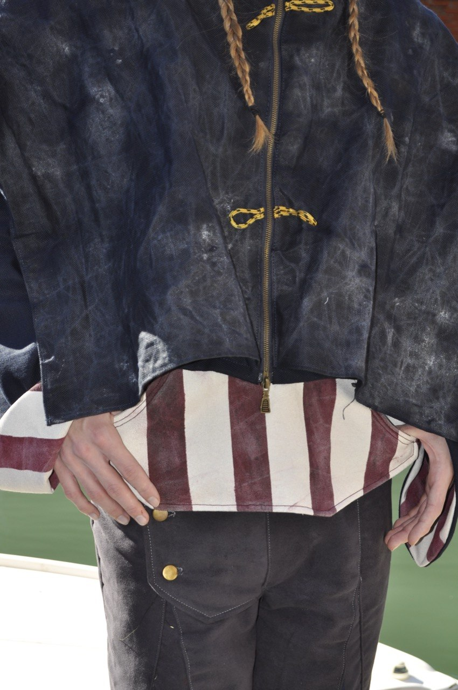

Fashion Collection · 2026
Andar
Ocando
Una ricerca sulle relazioni tra corpo, volume e movimento.
Year
2026
Category
Fashion Design
Techniques
Pattern Cutting

01 / 04
Exploring the relationship between body and form.
Il progetto nasce da una ricerca sulle forme architettoniche e sulla loro traduzione all'interno della silhouette.
Attraverso tagli, sovrapposizioni e volumi differenti, il corpo diventa il punto di partenza per una nuova costruzione dell'abito.